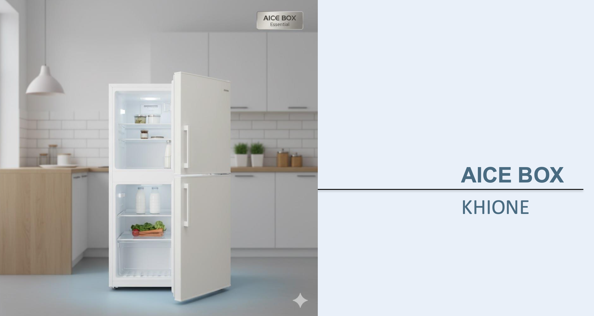

AIceBox Khione
Compact, silencieux et intelligent, Khione est le réfrigérateur connecté idéal pour les petits espaces modernes.
Caractéristiques principales
- Format compact et design minimaliste
- Contrôle intelligent via application AIce
- Technologie de refroidissement silencieuse
- Capacité totale : 400 L
- Niveau sonore : 38 dB
Étiquette énergétique
⚡ Classe : A+
🔋 Consommation : 190 kWh/an
📦 Volume total : 400 L
🔈 Niveau sonore : 38 dB
💰 Prix : 1 799 €
← Retour à la gamme AIceBox